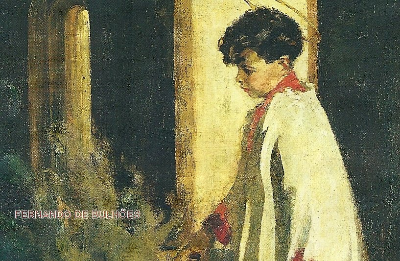
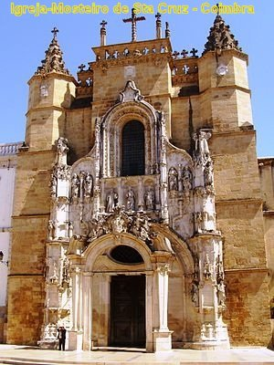
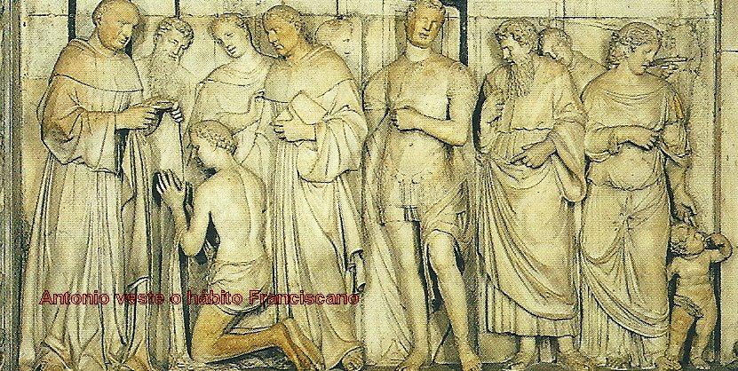

Frades de muitos pa�ses, como n�o havia casas em Porci�ncula para
abrigar tanta gente, constru�ram cabanas de palha e os Frades dormiam em �esteiras de palha�, estendidas no ch�o. Dai o nome do Capitulo.
Frades de muitos pa�ses, como n�o havia casas em Porci�ncula para
abrigar tanta gente, constru�ram cabanas de palha e os Frades dormiam em �esteiras de palha�, estendidas no ch�o. Dai o nome do Capitulo.IDEAL FRANCISCANO
NASCIMENTO E INF�NCIA
Santo Ant�nio � chamado de �Santo Ant�nio
de Lisboa�, cidade onde nasceu, e tamb�m de
�Santo Ant�nio de P�dua�, em honra a cidade italiana onde viveu e morreu. Ele 
Afirmam os seus hagi�grafos, que seu pai Martinho, era cavaleiro do Rei Afonso II de Portugal, e sua m�e, Maria Teresa, tinha parentesco com Failo I, o quarto rei das Ast�rias. O seu av�, era o conde Godofredo de Bulh�es, que foi o comandante da primeira cruzada, �guerra santa� dos crist�os contra os maometanos que dominavam a Palestina, e tamb�m tinha um tio chamado Fernando de Bulh�es que era C�nego e Diretor de uma Escola onde estudavam os filhos das fam�lias ricas, dos pol�ticos e tamb�m dos nobres, em Lisboa.
Oito dias depois do seu nascimento, foi Batizado na Catedral da S� e recebeu o nome de Fernando de Bulh�es.
Sua m�e era uma senhora muito religiosa, e por isso, olhava com indiz�vel satisfa��o, o fato de o filho ter nascido exatamente no dia de uma importante Festa de NOSSA SENHORA, quando se comemora a Assun��o aos C�us da VIRGEM MARIA. Este fato a levou a uma importante iniciativa, que por outro lado, concretizava um ideal materno: levou o seu filho Fernando � Igreja e diante da imagem da M�E DE DEUS, ofereceu-o e o consagrou a NOSSA SENHORA, suplicando a VIRGEM com fervorosas ora��es, que Ela fosse a Protetora e M�e de seu querido filho.
A casa onde nasceu Santo Ant�nio ficava pr�xima ao portal principal da Catedral de Lisboa. E certamente ele tinha outros irm�os. Entretanto somente temos conhecimento seguro de uma irm�, chamada Maria e que morreu em 1235 no Mosteiro de S�o Miguel, em Lisboa. Ela ainda vivia quando seu irm�o, Ant�nio, foi canonizado em 30 de maio de 1232.
CULTIVO DAS VIRTUDES
Desde tenra idade, os seus pais se preocupavam com sua educa��o. A m�e, sempre carinhosa, com palavras simples e objetivas, de maneira zelosa colocava DEUS em sua exist�ncia. Falava do MENINO JESUS, de NOSSA SENHORA, da prote��o sempre presente de S�O JOS� na Sagrada Fam�lia, entremeando os fatos descritos na Sagrada Escritura, com lindas ora��es, que ele sorridente e emocionado, repetia e procurava gravar.
E foi conhecendo os ensinamentos crist�os, que tamb�m nasceu em seu cora��o um desejo perseverante e irrefre�vel de agradar a DEUS e a NOSSA SENHORA, buscando inovar no quotidiano, procurando proceder de uma maneira a se mostrar mais am�vel e atencioso, de modo que, com especial delicadeza, ia abrindo a sua vida onde crescia um profundo sentimento, com um imenso amor a DEUS.
E assim, com apenas cinco anos de idade, confessou a sua m�e, que diante da imagem de NOSSA SENHORA fez o voto de castidade perp�tua.
Outros importantes frutos da piedosa educa��o recebida no lar, foram manifestados pelo seu ardente amor a JESUS no SANT�SSIMO SACRAMENTO, traduzidos por uma postura digna diante do Altar e pelo admir�vel respeito � Sagrada Eucaristia, e assim tamb�m, de um modo muito especial, a fervorosa e vigorosa venera��o a VIRGEM MARIA, por sua preciosa e eficaz presen�a na vida dos crist�os.
Cultivava tamb�m uma aten��o toda especial a Santa Cruz, que ao longo de sua exist�ncia, tornou-se uma arma implac�vel e destruidora dos ardis do maligno e dos hereges, que convertia os incr�dulos, assim como, era um instrumento glorioso que servia para interceder junto a DEUS a favor dos necessitados. Procedimento que o SENHOR carinhosamente e de imediato respondia, concedendo maravilhosos milagres pela intercess�o do Santo.
� medida que crescia na idade, exercitava de maneira not�vel as suas virtudes, cultivando a pureza de costumes, socorrendo carinhosamente os pobres, visitando as Igrejas e Conventos, e guardando diligentemente em sua mente, tudo o que diziam sobre as Sagradas Escrituras.
OS PRIMEIROS ESTUDOS
Logo cedo, foi para a escola onde o seu tio era o Diretor. E por isso mesmo, vivia no luxo e na regalia, que o estimulava a buscar a vida e o ideal dos ricos de seu tempo. Mas Santo Antonio foi tocado pela gra�a Divina, que penetrando em seu cora��o, lhe descortinou a realidade da vida e ele sentiu que aquele n�o era o seu caminho e fugiu da riqueza, da politicagem, da mentira e bajula��o e buscou a felicidade bem longe de tudo isso. Certo dia, j� rapazinho, desabafou:
�� mundo! Como voc� � um peso para mim! O seu poder � nada! Voc� n�o passa de uma varinha fraca. As suas riquezas s�o como uma baforada de fuma�a, e os seus prazeres como uma pedra escorregadia e trai�oeira, na qual a coragem de um homem de bem se afunda�.
QUER SER RELIGIOSO

Obedecendo a voz da sua consci�ncia, certo de que DEUS o chamava a vida religiosa, depois de comunicar aos seus pais o seu desejo e tamb�m, de lhes pedir a necess�ria autoriza��o e o apoio, Fernando de Bulh�es se apresentou ao Mosteiro em princ�pios de 1210, com 15 anos de idade.
Foi recebido com alegria pelo Padre Gon�alo Mendes, pois tinha sido recomendado pelo tio que era C�nego e pela linhagem nobre da descend�ncia de sua m�e.
Desde o in�cio, Fernando perseverantemente exercitava as suas virtudes, primando pela obedi�ncia e humildade no cumprimento exato das Regras da Ordem. Por isso mesmo, depois de um ano, o acharam digno de fazer a profiss�o solene de f�, pela qual, se consagrava para sempre a DEUS no estado religioso.
Todavia, permaneceu apenas dois anos no Mosteiro de S�o Vicente, porque nele n�o conseguia a paz que desejava, em face das frequentes visitas dos parentes e amigos, sobretudo, porque os seus parentes queriam interferir na sua pr�pria vida, oferecendo-lhe facilidades e alimentando o interesse dos C�negos em manter um relacionamento social estreito com os nobres e ricos, e isto, muito incomodava a Ant�nio. Ele queria uma vida mais fechada e contemplativa, que correspondesse �s exig�ncias do Evangelho. Por esse motivo, pediu ao Prelado Gon�alo Mendes, sua transfer�ncia para o Mosteiro de Santa Cruz de Coimbra, administrado pela mesma Ordem Religiosa e bem distante de Lisboa. Neste novo ambiente, tudo favoreceu para cultivar a vida espiritual, alcan�ando um vis�vel e efetivo progresso no caminho da santidade. E tamb�m, n�o se descuidava de se preparar para a vida ativa de sacerdote, estudando e lendo com especial dilig�ncia as Sagradas Escrituras e os escritos dos Santos Padres.
Dessa forma, no Mosteiro de Santa Cruz, Fernando ordenou-se sacerdote no ano de 1219, e lan�ou as bases s�lidas para a futura miss�o de pregador mission�rio na Ordem Franciscana, onde entrou oito anos depois.
Al�m de outros, um fato sobrenatural marcou a presen�a de Fernando no Mosteiro de Santa Cruz. Estava na enfermaria um doente com uma febre abomin�vel, e delirava terrivelmente, n�o havendo recursos que fizesse tranquiliza-lo. Fernando compadeu-se dele e orou fervorosamente a seu lado. Por inspira��o Divina lhe foi revelado que era o dem�nio que lhe causava o del�rio. Continuando a rezar, levantou-se rapidamente e estendeu sobre o doente o �mantelo de ombros� (sua capa). O dem�nio apavorado afastou-se vencido pela for�a da ora��o e o enfermo ficou tranquilo e curado do problema da sua sa�de.
APRECIAVA A ORDEM FRANCISCANA
Ele j� tinha certa admira��o pelo comportamento e atua��o dos franciscanos que teve a oportunidade de conhecer, principalmente a profunda humildade e mod�stia que revelavam, exercitando-a habitualmente com prazer, em cada dia. Despojados de tudo, era essencial aos frades franciscanos pedir esmolas, para viver. E faziam isso com muita humildade e se portavam com uma impressionante e meticulosa aten��o, n�o se permitindo ultrapassar os limites do respeito e da ambi��o, nunca acolhendo mais que do que o m�nimo indispens�vel a sobreviver, mesmo que a generosidade do doador insistisse em oferecer uma ajuda bem maior. Tudo isto, fez nascer em Fernando uma forte inclina��o pela Ordem Franciscana.
Nesta �poca, em 1219, S�o Francisco foi o primeiro a realizar uma miss�o para converter os sarracenos, quando pessoalmente pregou para o Sult�o do Egito. Neste mesmo ano, S�o Francisco enviou cinco irm�os para converter os mu�ulmanos em Marrocos. Foram eles: Bernardo Otton, Pedro, Adjuto e Ac�rsio. Com coragem e bravura pregaram o cristianismo para os maometanos. Foram presos, flagelados, encarcerados diversas vezes e por fim, no dia 16 de Janeiro de 1220, foram mortos a golpes de espada pelo �Miramolim�(chefe dos crentes mu�ulmanos) se constituindo nos primeiros m�rtires franciscanos.
O infante Dom Pedro que vivia em Marrocos por desaven�as com seu irm�o Dom Afonso II de Portugal, se incumbiu de levar as preciosas rel�quias dos cinco m�rtires franciscanos para Coimbra, que naquele tempo era a resid�ncia do Rei de Portugal. O santo dep�sito devia ser levado � Catedral, mas, passando o cortejo em frente ao Mosteiro de Santa Cruz, decidiram deix�-lo na Igreja do Mosteiro.
Fernando que era religioso conventual no Mosteiro, pode contemplar os corpos, terrivelmente martirizados, daqueles cinco frades franciscanos. E rezando diante dos corpos, teve naquele momento uma vis�o sobrenatural, viu as almas de aqueles bem-aventurados subirem depressa, passando pela porta do Purgat�rio, sem parar, e ligeiras, entrarem no C�u. Naquele momento, julgou que n�o devia mais resistir � Vontade Divina, no seu modo de pensar, t�o claramente manifestada naquela vis�o. Por isto, na primeira ocasi�o em que se encontrou com os frades franciscanos do Convento de Santo Ant�nio dos Olivais, que vinham pedir esmolas, revelou-lhes a sua inten��o de ser um deles, e neste sentido, lhes fez o pedido, se eles aceitavam e concordavam? Estavam no fim de Junho ou princ�pio de Julho de 1220.
Embora os C�negos do Mosteiro de Santa Cruz tivessem colocado certa resist�ncia a sa�da de Fernando, a verdade � que tudo se transcorreu com muita dignidade e compreens�o, e os franciscanos receberam Fernando �de bra�os abertos� , pois j� conheciam os seus excelentes dotes morais e intelectuais.
Os antigos bi�grafos de Santo Antonio afirmavam com unanimidade: �No dia imediato ao pedido de Fernando para entrar na Ordem de S�o Francisco, os franciscanos voltaram ao Mosteiro de Santa Cruz, vestiram Fernando com o �burel� um h�bito grosso de l� da Ordem dos Frades Menores, e levaram o Novi�o para o Mosteiro dos Olivais�.

Na ocasi�o da vestidura Fernando tomou o nome de �Ant�nio�, em homenagem ao padroeiro do Mosteiro dos Olivais.
Depois da morte de Santo Antonio, quando ele foi inscrito por Sua Santidade o Papa Greg�rio IX, no Cat�logo dos Santos, os C�negos de Santa Cruz sentiram vivamente a perda que sofreram e inauguraram um per�odo de atitudes terrivelmente inamistosas para com os franciscanos. As ofensas e agress�es cresceram tanto, que foi preciso a interven��o de dois Papas (Papa Greg�rio IX, 1227-1241 e o Papa Inoc�ncio IV, 1243-1254) para cessar com aquela perturba��o e fazer voltar � paz �s duas Ordens.
SONHAVA EM SER UM M�RTIR
Como j� foi mencionado, com a entrada na Ordem dos Frades Menores de S�o Fr�ncico, Fernando passou a se chamar: �Frei ou Irm�o Ant�nio�.
No Noviciado, ele foi modelar em tudo, cumpria com prazer e alegria as Regras da Ordem: na humilde submiss�o, na observ�ncia da pobreza, na frequ�ncia ao Coro e atos junto com a Comunidade, no recolhimento e na fraterna caridade. Nas suas pias medita��es, para melhor servir a DEUS, acariciava com grande ardor o desejo de ser mission�rio entre os infi�is, e tamb�m de derramar o seu sangue por amor a CRISTO.
E tanto suplicou a NOSSO SENHOR, que tendo ele feito o pedido aos Superiores da Ordem para ser Mission�rio no exterior, com apenas cinco meses de Noviciado, os Prelados a quem competiam julgar a sua idoneidade, reconheceram nele as qualidades necess�rias e permitiram a sua ida a Marrocos, para onde partiu em dezembro de 1220. Levou consigo Frei Filipino, sacerdote tamb�m muito santo e abrasado de amor a DEUS.
Aconteceu que logo chegando a Marrocos, Antonio adoeceu! Uma forte febre mal�rica se apossou dele de maneira t�o violenta, que os rem�dios usados naquela �poca n�o traziam qualquer melhora. Ele resignadamente acolheu a Vontade de DEUS e junto com o companheiro Frei Filipino, tomou o navio de volta a Portugal.
Mas tamb�m n�o era a Vontade Divina que ele regressasse a terra natal. Durante a viagem, levantou-se uma fort�ssima tempestade, com ondas elevad�ssimas, que desviaram o rumo da nau. Antonio estava exausto, extenuado pela febre e castigado pela tempestade, o seu corpo do�a e necessitava de repouso. A embarca��o desgovernada alcan�ou as costas da Sicilia (ilha pertencente � It�lia) e atracou num ponto que ficou indeterminado para posterioridade. Foi acolhido pelos Frades em Messina e deve ter ficado por l� se recuperando, at� fins de Abril.
A verdade � que soube da convoca��o dos franciscanos, para participa��o no Capitulo Geral em Assis, que foi presidido pelo fundador da Ordem, S�o Francisco de Assis.
CAPITULO DAS ESTEIRAS
O Capitulo que foi realizado no dia
29 de Maio de 1221, e ficou marcado na hist�ria com o nome de �Cap�tulo das Esteiras�,
porque comparecendo mais de 3.000 Frades de muitos pa�ses, como n�o havia casas em Porci�ncula para
abrigar tanta gente, constru�ram cabanas de palha e os Frades dormiam em �esteiras de palha�, estendidas no ch�o. Dai o nome do Capitulo.
A este Capitulo Santo, Antonio quis comparecer para se edificar com o fervor de tantos confrades e para, pessoalmente, conhecer o Fundador da Ordem.
Chegou � grande assembl�ia como um desconhecido. O seu aspecto tamb�m n�o era bom, pois o seu corpo ainda n�o estava totalmente recuperado das fadigas extenuantes que sofreu, em consequ�ncia da febre e da tempestade mar�tima, e por isso, lhe deram pouca import�ncia. Tamb�m, neste fato, Antonio via a Vontade de DEUS, cujos des�gnios imperscrut�veis, ele mesmo, j� havia experimentado anteriormente.
Assim, na assembl�ia capitular celebrada em Assis, Antonio praticamente n�o apareceu, o seu aspecto f�sico n�o atra�a ningu�m e sua humildade o manteve oculto. E t�o grande foi a sua reserva, que na distribui��o dos capitulares para os diversos Conventos e Prov�ncias, nenhum Superior escolheu o nome dele para a sua Comunidade. O companheiro de viagem Frei Filipino teve destino, mas ele... Bem, ele ficou legado ao esquecimento, num canto. Estando assim isolado, foi visto por Frei Graciano, Superior da Prov�ncia Emilia Romagna, na It�lia. Este lhe dirigiu a palavra e perguntou se ele era sacerdote? Recebendo a resposta afirmativa, pediu ao Superior Geral eleito no Capitulo, Frei Elias, para lev�-lo ao Eremit�rio (Convento em Montepaolo), cerca de 20 quil�metros da cidade de Forli (Forli-Cesena), onde o Frade portugu�s celebraria a Santa Missa para os irm�os, que a semelhan�a dos antigos anacoretas, vivia no Convento uma vida s� de contempla��o, e tamb�m, Antonio poderia ajudar nos afazeres e necessidades da casa. Frei Elias consentiu.
No retiro do Eremit�rio, Santo Antonio vivia s� para DEUS e a sua pr�pria santifica��o. Celebrava a Santa Missa com muita piedade e o resto do dia consagrava ao trabalho necess�rio, � ora��o e � pr�tica das virtudes.
Existia nas proximidades do Eremit�rio uma gruta feita pela natureza. A ela se retirava frequentemente para os exerc�cios de ora��o e penit�ncia. Deste modo, conseguiu esconder diante dos confrades os seus ex�mios dotes. E nesta vida solit�ria permaneceu durante nove meses.
Na cidade de Forli, pr�xima a Montepaolo aconteceu ordena��es sacerdotais nos primeiros meses de 1222. Os Franciscanos tratavam em Forli dos doentes num Hospital, e tamb�m possu�am na cidade, uma Casa Religiosa. Al�m dos religiosos Franciscanos, iam ser tamb�m ordenados religiosos Dominicanos. O Guardi�o do Eremit�rio convidou a Santo Antonio para assistir � solenidade e assim, ambos desceram de Montepaolo a Forli.
Antes, ou depois do ato solene, o Guardi�o queria que algu�m dissesse aos ordinandos ou j� ordenados, algumas palavras de circunst�ncia. Todavia, ningu�m estava preparado e por isso todos se escusaram. Ent�o, o Guardi�o falou para Antonio que estava ao seu lado: �Vai tu e fala o que o ESP�RITO DO SENHOR te inspirar�.
Embora ele tamb�m n�o estivesse preparado para discursar, da mesma forma como os outros sacerdotes, Antonio foi e revelou os seus admir�veis e ex�mios dotes.
Na expectativa de todos do que haveriam de ouvir, Antonio come�ou a sua alocu��o, proferindo em latim. E com muita eloqu�ncia foi-se acalorando a medida que discorria com entusiasmo sobre a dignidade sacerdotal, revestindo os argumentos com palavras convincentes, como de quem est� com a alma abrasada pelo amor de DEUS. N�o restava d�vida. DEUS escolheu o momento certo para revelar um Ap�stolo da Sua Divina Palavra, queria que seu servo iluminasse todos os povos, com a Luz da Divina Doutrina.
O audit�rio permanecia num profundo silencio admirador. Ningu�m queria perder uma palavra. Ao findar a alocu��o, todos foram un�nimes em aplaudir o Frade portugu�s, com eloqu�ncia e vibra��o.
A consequ�ncia daquela inesperada revela��o foi que o Provincial o chamou e permitiu que Antonio pregasse nas localidades da Prov�ncia e depois, o fato chegando ao conhecimento de S�o Francisco, este autorizou Antonio a pregar em toda parte.
E assim, na continuidade, estando informado sobre o vasto conhecimento de Ant�nio, o Fundador da Ordem enviou-lhe uma carta o elegendo professor, a fim de ele comunicar o seu saber aos confrades da Ordem. Mas colocava acima de tudo, que seus filhos continuassem a cultivar sempre com prioridade o esp�rito de ora��o, conforme a �Regra que prometemos�. A carta dizia:
�Ao meu car�ssimo irm�o Ant�nio, meu bispo, o irm�o Francisco lhe deseja sa�de e paz no SENHOR.
Conv�m-me que leias aos Frades a sagrada teologia, mas de maneira que, como sobretudo desejo, nem em ti e nem nos outros se extinga o esp�rito de ora��o, conforme a Regra que prometemos. Am�m�.